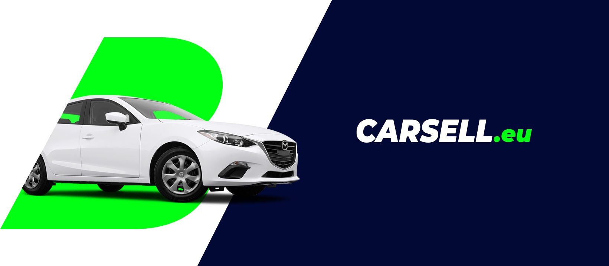

w ramach zadania rekrutacyjnego stworzyłam widok hi-fi mobile oraz desktop w duchu załączonego Key Visuala.
w zadaniu poproszono o widok "panelu użytkownika", który zawierał:
- nazwę zalogowanego użytkownika
- menu, które zawiera pozycje: aukcje, obserwowane aukcje, wystaw na sprzedaż, bazę wiedzy, politykę prywatności, centrum sporów (element aktywny)
- tabelę centrum sporów zawierającej kolumny: ID zgłoszenia, nazwa ogłoszenia, data zgłoszenia, data ostatniej odpowiedzi oraz akcja „przejścia do szczegółów tego zgłoszenia”
- powiadomienie systemowe zaprojektowane w formie krótkiego komunikatu (treść, wygląd oraz placement), który poinformuje o tym, że ktoś właśnie złożył ofertę w jednej z aukcji wystawionej przez zalogowanego użytkownika

realizacja projektu


by magdalena piasecka 2020